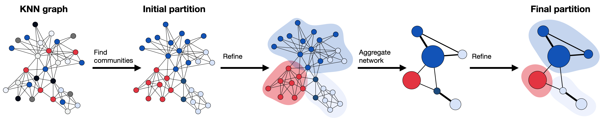

12. 聚类#
关键要点
在单细胞 KNN 图上使用 Leiden 社区检测。
使用不同分辨率参数进行亚聚类，能让用户聚焦于数据集中更精细的子结构，从而有可能识别出更精细的细胞状态。
环境设置
安装 conda:
在创建环境之前，请确保 conda 已安装在您的系统中。
保存 yml 内容:
将 yml 选项卡中的内容复制到名为
environment.yml的文件中。
创建环境:
打开终端或命令提示符。
运行以下命令：
conda env create -f environment.yml
激活环境:
创建好环境后，使用以下命令激活它：
conda activate <environment_name>
替换
<environment_name>，名称就是在environment.yml文件中指定的那个。在 yml 文件里，它看起来像这样：name: <environment_name>
验证安装:
通过运行以下命令，检查环境是否创建成功：
conda env list
name: clustering
channels:
- defaults
- conda-forge
dependencies:
- conda-forge::python=3.13
- conda-forge::scanpy=1.11.5
- conda-forge::pynndescent=0.5.13
- conda-forge::ipykernel=7.1.0
- pip
- pip:
- igraph==1.0.0
- lamindb
获取数据和笔记本
本书使用 lamindb，并通过 theislab/sc-best-practices 实例 来存储、共享和加载数据集与笔记本。感谢 Lamin Labs 提供免费托管服务。
安装 lamindb
安装 lamindb Python 软件包：
pip install lamindb
可选择创建 lamin 账户
按照以下 说明 注册并登录。
验证你的设置
运行
lamin connect命令：
import lamindb as ln ln.Artifact.connect("theislab/sc-best-practices").df()
你现在应该看到最多100个存储的数据集。
访问数据集（Artifact）
在 Artifacts 页面 搜索该数据集。
加载一个 Artifact 及其对应的对象：
import lamindb as ln af = ln.Artifact.connect("theislab/sc-best-practices").get(key="key_of_dataset", is_latest=True) obj = af.load()
该对象现在已可在内存中访问，并可用于分析。请调整
ln.Artifact.connect("theislab/sc-best-practices").get("SOMEIDXXXX")后缀以获取相应的版本。访问笔记本（Transform）
在 Transforms 页面 搜索该笔记本。
加载笔记本：
lamin load <notebook url>
这会把笔记本下载到当前工作目录。与
Artifacts类似，你可以调整后缀 ID 来获取旧版本。
12.1. 动机#
预处理和可视化使我们能够刻画 scRNA-seq 数据集并降低其维度。到目前为止，我们对细胞进行了嵌入和可视化，以理解数据集的底层特性。然而，这些细胞的定义仍然相当抽象。单细胞分析的下一个自然步骤，就是在数据集中识别细胞结构。
在 scRNA-seq 数据分析中，我们通过寻找与已知细胞状态或细胞周期阶段相关的细胞身份，来刻画数据集中的细胞结构。这一过程通常称为细胞身份注释。为此，我们把细胞组织成聚类，以推断相似细胞的身份。聚类本身是一个常见的无监督机器学习问题。我们可以通过在降维后的表达空间中最小化聚类内距离来得到聚类。在这里，表达空间衡量的是细胞在降维表示下基因表达的相似性。这种低维表示通常由主成分分析确定，而相似性评分则基于欧氏距离。
KNN（K 近邻）图的节点对应数据集中的细胞。我们首先在 PC 降维后的表达空间上计算所有细胞的欧氏距离矩阵，然后把每个细胞与其最相似的 K 个细胞相连。通常， K 会根据数据集大小设为 5 到 100 之间的值。KNN 图通过表示表达空间中的密集区域（即图中连接稠密的区域），来反映表达数据的底层拓扑结构 [Wolf et al., 2019]。KNN 图中的密集区域由 Leiden 和 Louvain 等社区检测方法来识别[Blondel et al., 2008].
PC 降维表达空间
PC 降维后的表达空间，指的是对高维基因表达数据使用主成分分析（PCA）之后得到的低维空间。例如，做完 PCA 后，我们处理的是排名前 10–50 的主成分，而不是 20,000 个基因。
Leiden 算法是 Louvain 算法的改进版，在单细胞 RNA-seq 数据分析中，它的表现优于其他聚类方法（[Du et al., 2018, Freytag et al., 2018, Weber and Robinson, 2016]）。由于 Louvain 算法已不再维护，因此更推荐改用 Leiden。
因此，我们建议使用 Leiden 算法[Traag et al., 2019] 在单细胞 K 近邻（KNN）图上对单细胞数据集进行聚类。
Leiden 会权衡某个聚类内部细胞之间的链接数与整个数据集中预期的链接总数，并据此创建聚类。
{kind=link}

图12.1 Leiden 算法在由 PC 降维表达空间得到的 KNN 图上计算聚类。起点是一个单元素划分（singleton partition），其中每个节点各自构成一个社区。下一步，算法通过把单个节点从一个社区移动到另一个社区来创建划分，随后再加以精炼以改进划分。精炼后的划分会被聚合成一个网络。接着，算法在聚合网络中再次移动单个节点，直到精炼不再改变划分为止。所有步骤反复进行，直到生成最终的聚类、且划分不再变化。#
Leiden 模块有一个分辨率（resolution）参数，可用于确定划分聚类的尺度，从而决定聚类的粗细程度。分辨率参数越高，得到的聚类越多。该算法还允许通过对 KNN 图取子集，对数据集中特定的聚类进行高效的亚聚类。亚聚类使用户能够识别聚类内部的细胞类型特异状态，或进行更精细的细胞类型标注[Wagner et al., 2016]，但也可能产生仅由数据中噪声所致的模式。
如前所述，Leiden 算法已在 scanpy 中实现。
在 GPU 上运行
在百万细胞规模的图上做 Leiden 聚类，是典型流程中最严重的 CPU 瓶颈之一，也是 GPU 加速收益最大的环节之一。rapids-singlecell 提供 rsc.tl.leiden （签名相同），其运行速度通常比 CPU 实现快 50–100×。
import lamindb as ln
import scanpy as sc
assert ln.setup.settings.instance.slug == "theislab/sc-best-practices"
ln.track("rJhR7SskiROg")
# Configuring scanpy's settings for outfits and visualization
sc.settings.verbosity = 0
sc.settings.set_figure_params(dpi=80, facecolor="white", frameon=False)
→ loaded Transform('rJhR7SskiROg0000', key='clustering.ipynb'), re-started Run('LZOdfrBECJI7FQWH4MFl') at 2026-02-16 13:15:47 UTC
→ notebook imports: lamindb==2.0.1 scanpy==1.11.5
12.2. 将人类骨髓细胞聚类#
首先，我们加载数据集。我们对预处理后的样本 site4-donor8 （来自 NeurIPS 人类骨髓数据集）进行聚类；该样本我们已经过预处理，并上传到了我们的 LaminDB.
该数据集已用 scran 进行了归一化。
af = ln.Artifact.get(key="cellular_structure/s4d8_subset.h5ad", is_latest=True)
adata = af.load()
Leiden 算法在降维后的表达空间上利用 KNN 图。我们可以用 scanpy 函数在低维的基因表达表示上计算 KNN 图 sc.pp.neighbors。我们在排名前 30 的主成分上调用这一函数，因为它们捕获了数据集中的大部分方差。将聚类结果可视化有助于我们理解结果，因此我们把细胞嵌入到一个 UMAP 嵌入中。更多细节可参见 降维章节.
sc.pp.neighbors(adata, n_pcs=30)
sc.tl.umap(adata)
现在我们可以调用 Leiden 算法了。
sc.tl.leiden(adata, flavor="igraph", n_iterations=2)
优化Leiden迭代
The n_iterations 参数在 sc.tl.leiden() 决定算法为优化其社区检测而执行多少轮精炼。
n_iterations = 2(建议): 这是大多数分析的标准选择。它在保持计算效率的同时，相比 Louvain 算法显著提升了聚类质量。n_iterations = -1（最优）： 会迫使算法一直运行到完全收敛为止。虽然这会产生“完美”的数学聚类，但在大型数据集上会显著变慢。n_iterations > 2: 允许你指定固定的迭代轮数，以在精度和速度之间取得平衡。
提示 : 即使在两次迭代时，Leiden也有效地防止了旧方法中经常出现的“断开的聚类”问题。
在 scanpy 中，分辨率参数用于聚类方法（如 Louvain 或 Leiden）。它控制所得聚类的粒度或粗细程度。scanpy 中默认的分辨率参数为 1.0。不过，在许多情况下，分析人员可能想尝试不同的分辨率参数来控制聚类的粗细。因此，我们建议把聚类结果保存在一个能体现所选分辨率的指定键名下。
sc.tl.leiden(
adata, key_added="leiden_res0_25", resolution=0.25, flavor="igraph", n_iterations=2
)
sc.tl.leiden(
adata, key_added="leiden_res0_5", resolution=0.5, flavor="igraph", n_iterations=2
)
sc.tl.leiden(
adata, key_added="leiden_res1", resolution=1.0, flavor="igraph", n_iterations=2
)
现在我们将不同分辨率下用 Leiden 算法得到的聚类结果可视化。可以看到，分辨率在很大程度上影响着聚类的粗细。分辨率参数越高，得到的社区（即识别出的聚类）越多；分辨率越低，社区越少。你可以把它想象成缩放：分辨率越高，我们对聚类看得越细。因此，分辨率参数控制着算法如何把 KNN 嵌入中连接稠密的区域聚到一起。这一点对于后续给聚类做注释尤为重要。
sc.pl.umap(
adata,
color=["leiden_res0_25", "leiden_res0_5", "leiden_res1"],
legend_loc="on data",
)
{kind=link}
现在我们清楚地考察不同分辨率对聚类结果的影响。当分辨率为 0.25 时，聚类要粗得多，算法检测到的社区也更少。此外，与分辨率为 1.0 时得到的聚类相比，聚类区域的密度也更低。
我们要再次强调，对所显示聚类之间的距离必须谨慎解读。由于 UMAP 嵌入是二维的，并非所有点之间的距离都能被很好地保留。我们建议不要解读在 UMAP 嵌入上可视化的聚类之间的距离。
和往常一样，我们会把处理后的 AnnData 上传到 lamindb。你可以跳过这部分。
af = ln.Artifact.from_anndata(
adata,
key="cellular_structure/s4d8_clustered.h5ad",
description="anndata after clustering",
).save()
af
→ writing the in-memory object into cache
→ returning artifact with same hash: Artifact(uid='UIb3nBOY3Xcejedh0003', version_tag=None, is_latest=True, key='cellular_structure/s4d8_clustered.h5ad', description='anndata after clustering', suffix='.h5ad', kind='dataset', otype='AnnData', size=364819346, hash='20SV0Ax1_Ot0qHUM0DgM9Q', n_files=None, n_observations=8874, branch_id=1, space_id=1, storage_id=1, run_id=11, schema_id=None, created_by_id=5, created_at=2026-02-16 14:57:06 UTC, is_locked=False); to track this artifact as an input, use: ln.Artifact.get()
Artifact(uid='UIb3nBOY3Xcejedh0003', version_tag=None, is_latest=True, key='cellular_structure/s4d8_clustered.h5ad', description='anndata after clustering', suffix='.h5ad', kind='dataset', otype='AnnData', size=364819346, hash='20SV0Ax1_Ot0qHUM0DgM9Q', n_files=None, n_observations=8874, branch_id=1, space_id=1, storage_id=1, run_id=11, schema_id=None, created_by_id=5, created_at=2026-02-16 14:57:06 UTC, is_locked=False)
12.3. 参考文献#
Vincent D. Blondel, Jean-Loup Guillaume, Renaud Lambiotte, and Etienne Lefebvre. Fast unfolding of communities in large networks. Journal of Statistical Mechanics: Theory and Experiment, 2008(10):P10008, October 2008. Publisher: IOP Publishing. URL: https://doi.org/10.1088/1742-5468/2008/10/p10008, doi:10.1088/1742-5468/2008/10/p10008.
A Du, MD Robinson, and C Soneson. A systematic performance evaluation of clustering methods for single-cell RNA-seq data [version 1; peer review: 2 approved with reservations]. F1000Research, 2018. doi:10.12688/f1000research.15666.1.
S Freytag, L Tian, I L�nnstedt, M Ng, and M Bahlo. Comparison of clustering tools in R for medium-sized 10x Genomics single-cell RNA-sequencing data [version 1; peer review: 1 approved, 2 approved with reservations]. F1000Research, 2018. doi:10.12688/f1000research.15809.1.
V. A. Traag, L. Waltman, and N. J. van Eck. From Louvain to Leiden: guaranteeing well-connected communities. Scientific Reports, 9(1):5233, March 2019. URL: https://doi.org/10.1038/s41598-019-41695-z, doi:10.1038/s41598-019-41695-z.
Allon Wagner, Aviv Regev, and Nir Yosef. Revealing the vectors of cellular identity with single-cell genomics. Nature Biotechnology, 34(11):1145–1160, November 2016. URL: https://doi.org/10.1038/nbt.3711, doi:10.1038/nbt.3711.
Lukas M. Weber and Mark D. Robinson. Comparison of clustering methods for high-dimensional single-cell flow and mass cytometry data. Cytometry Part A, 89(12):1084–1096, 2016. _eprint: https://onlinelibrary.wiley.com/doi/pdf/10.1002/cyto.a.23030. URL: https://onlinelibrary.wiley.com/doi/abs/10.1002/cyto.a.23030, doi:https://doi.org/10.1002/cyto.a.23030.
F. Alexander Wolf, Fiona K. Hamey, Mireya Plass, Jordi Solana, Joakim S. Dahlin, Berthold Göttgens, Nikolaus Rajewsky, Lukas Simon, and Fabian J. Theis. PAGA: graph abstraction reconciles clustering with trajectory inference through a topology preserving map of single cells. Genome Biology, 20(1):59, March 2019. URL: https://doi.org/10.1186/s13059-019-1663-x, doi:10.1186/s13059-019-1663-x.
12.4. 贡献者#
我们衷心感谢以下人员的贡献：
12.4.2. 审阅者#
Lukas Heumos